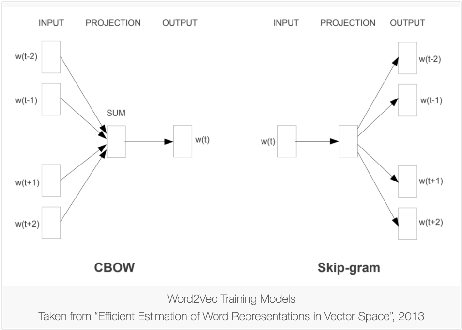

Word Embeddings
Sources
- https://machinelearningmastery.com/what-are-word-embeddings/
- https://pdfs.semanticscholar.org/4370/bcbd74b35ea2452fe749adf5a9f81dbc9b37.pdf?_ga=2.240594817.320278158.1585513711-947468560.1585513711
Definition
- A type of word representation that allows words with similar meaning to have a similar representation.
- To represent sparse, high-dimensional data in machine learning and natural language processing.
Motivation
The observation that traditional representations for words, such as a one-hot encoding, are high dimensional and inefficient, since such an encoding captures none of the similarity or correlation information between words in the source text.
Mechanisms
Individual words are represented as real-valued vectors in a predefined vector space. Each word is mapped to one vector and the vector values are learned in a way that resembles a neural network, and hence the technique is often lumped into the field of deep learning.
Three Major Algorithms
- Embedding Layer
- learned jointly with a neural network model on a specific natural language processing task.
- document text be cleaned and prepared such that each word is one-hot encoded.
- The embedding layer is used on the front end of a neural network and is fit in a supervised way using the Backpropagation algorithm.
- Word2Vec
The work involved analysis of the learned vectors and the exploration of vector math on the representations of words. For example, subtracting the “man-ness” from “King” and adding “women-ness” results in the word “Queen“, capturing the analogy “king is to queen as man is to woman“.
- Continuous Bag-of-Words (CBOW)
- Learn the embedding by predicting the current word based on its context.
- Continuous Skip-Gram Model.
- Learn by predicting the surrounding words given a current word.
- GloVe (the Global Vectors)
- An extension of w2v
- Put togetehr the global statistics of matrix factorization tecniques like LSA with the local context-based learning in word2vec.
- Constructs an explicit word-context or word co-occurrence matrix using statistics across the whole text corpus
Related topics
- Latent semantic analysis (LSA)
- Hyperspace analogue to language (HAL)